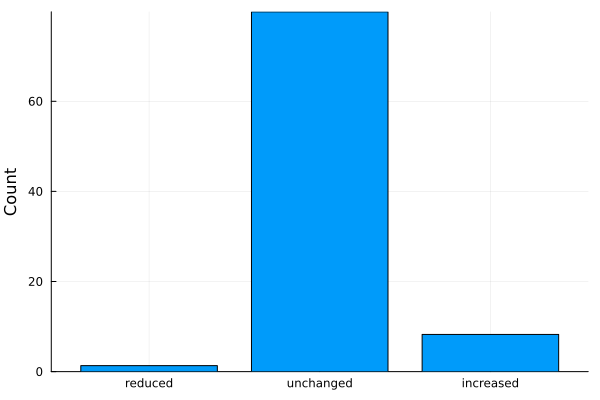
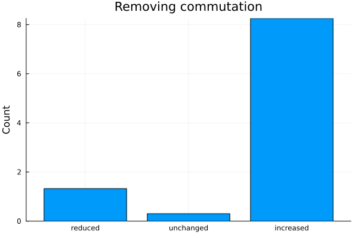
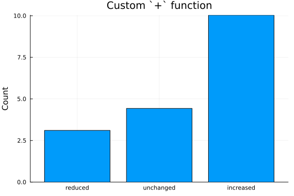

7. Record custom path properties
A path is what we call the entire past of a propagating Pauli through a quantum circuit. By default we don't record anything about the past, but only store the current Pauli string and its current coefficient. The PathProperties types gives us a wrapper around the coefficients that you can use to record some of the history of your Pauli string. This allows one to learn more about the propagation through the circuit or even truncate on different properties. For example, we use the PauliFreqTracker under the hood to track how often we branch on Pauli rotations, allowing you to truncate via max_freq or max_sins.
using PauliPropagationOne implemented example is the PauliFreqTracker, which tracks how often a Pauli string split at a PauliRotation gate, we call that frequency, and whether it received a cos or sin coefficient.
The PauliFreqTracker
coeff = 1.3
PauliFreqTracker(coeff)PauliFreqTracker{Float64}(coeff=1.3, nsins=0, ncos=0, freq=0)nq = 32
PauliString(nq, :X, 16, PauliFreqTracker(coeff))PauliString(nqubits: 32, PauliFreqTracker(1.3) * IIIIIIIIIIIIIIIXIIII...)We can either wrap all of our coefficients in this type, or we use the wrapcoefficients() function.
pstr = PauliString(nq, :X, 16, coeff)
wrapped_pstr = wrapcoefficients(pstr, PauliFreqTracker)PauliString(nqubits: 32, PauliFreqTracker(1.3) * IIIIIIIIIIIIIIIXIIII...)This wrapping also works for a PauliSum:
psum = PauliSum(nq)
add!(psum, :X, 16, coeff)PauliSum(nqubits: 32, 1 Pauli term:
1.3 * IIIIIIIIIIIIIIIXIIII...
)wrapped_psum = wrapcoefficients(psum, PauliFreqTracker)PauliSum(nqubits: 32, 1 Pauli term:
PauliFreqTracker(1.3) * IIIIIIIIIIIIIIIXIIII...
)Let's apply a PauliRotation to it.
pauli_rot = PauliRotation(:Y, 16)
propagate!(pauli_rot, wrapped_psum, 0.4)PauliSum(nqubits: 32, 2 Pauli terms:
PauliFreqTracker(1.1974) * IIIIIIIIIIIIIIIXIIII...
PauliFreqTracker(0.50624) * IIIIIIIIIIIIIIIZIIII...
)coefficients(wrapped_psum)ValueIterator for a Dict{UInt64, PauliFreqTracker{Float64}} with 2 entries. Values:
PauliFreqTracker{Float64}(coeff=1.1973792922037507, nsins=0, ncos=1, freq=1)
PauliFreqTracker{Float64}(coeff=0.5062438450012458, nsins=1, ncos=0, freq=1)We see that the term belonging to the IIIIIIIIIIIIIIIXIIII... Pauli string received ncos=1 cosine prefactors, and split a total of freq=1 times. Similarly the other time with nsins=1 sine prefactors. Note that the coeff field of PauliFreqTracker carries the coefficient as in the normal propagation. In fact, this coeff field is very important and we recommend that you have it on your PathProperties type. If you just want to use max_freq and max_sin truncation, then you don't have to manually wrap the coefficients. We will do that automatically and then unwrap the coefficients again:
# this truncates any Pauli with any sine coefficient
propagate(pauli_rot, psum, 0.4; max_sins=0)
## but the in-place propagate!() function will not automatically convert
# propagate!(pauli_rot, psum, 0.4; max_sins=0)PauliSum(nqubits: 32, 1 Pauli term:
1.1974 * IIIIIIIIIIIIIIIXIIII...
)A custom PathProperties type
Now let us define a custom PathProperties type. For example, we can define a type that records how often a Clifford gate reduced the weight (number of non-Identity Paulis) of a propagating Pauli String, how often it left it unchanged, and how often it increased it.
struct CliffordWeightTracker <: PathProperties
coeff::Float64 # for simplicity use Float64, but in general you might want a parametrized number type
reduced::Int
unchanged::Int
increased::Int
endNow let's try to wrap the coefficient of a PauliString in this type.
## this will throw an error if you run it
# wrapcoefficients(pstr, CliffordWeightTracker)This did not work, because if you want wrapcoefficients() to do the job, you need to define a constructor for your type expecting only the coefficient. You can still manually construct the wrapped Pauli string by filling in the fields that aren't coeff with zeros, or you defined the default constructor.
CliffordWeightTracker(coeff) = CliffordWeightTracker(coeff, 0, 0, 0)CliffordWeightTrackercwt_pstr = wrapcoefficients(pstr, CliffordWeightTracker)PauliString(nqubits: 32, CliffordWeightTracker(1.3) * IIIIIIIIIIIIIIIXIIII...)And propagation already works!
cliff_gate = CliffordGate(:H, 16)
result_psum = propagate(cliff_gate, cwt_pstr)PauliSum(nqubits: 32, 1 Pauli term:
CliffordWeightTracker(1.3) * IIIIIIIIIIIIIIIZIIII...
)coefficients(result_psum)ValueIterator for a Dict{UInt64, CliffordWeightTracker} with 1 entry. Values:
CliffordWeightTracker(coeff=1.3, reduced=0, unchanged=0, increased=0)The propagation natively worked because we have a coeff field on our custom type (you can restart the notebook and change the name of the coeff field to see where it fails). But now we need to define how CliffordWeightTracker increments its fields, i.e., how it knows what a Clifford gate does to it.
The way that CliffordGates are defined is via the applytoall!() and apply() functions. applytoall!() loads the corresponding look-up map for the gate and passes it to the specific apply(). See our example notebook on custom gates for more information. We now need to define a version of apply() that is slightly more specifically typed so that when propagating with the CliffordWeightTracker, the propagation will dispatch to that code. For reference, the following is how the default code looks like:
function PauliPropagation.apply(gate::CliffordGate, pstr, coeff, lookup_map; kwargs...)
# the lookup array carries the new Paulis + sign for every occuring old Pauli combination
qinds = gate.qinds
# this integer carries the active Paulis on its bits
lookup_int = getpauli(pstr, qinds)
# this integer can be used to index into the array returning the new Paulis
# +1 because Julia is 1-indexed and lookup_int is 0-indexed
partial_pstr, sign = lookup_map[lookup_int+1]
# insert the bits of the new Pauli into the old Pauli
pstr = setpauli(pstr, partial_pstr, qinds)
coeff *= sign
# always a length-1 tuple, which will be compiled away
return ((pstr, coeff),)
endWe will still use this apply() function, but wrap it with specific logic for CliffordWeightTracker.
@inline function PauliPropagation.apply(gate::CliffordGate, pstr, wrappedcoeff::CliffordWeightTracker, lookup_map; kwargs...)
# normal Clifford logic here
new_pstr, new_coeff = only(apply(gate, pstr, wrappedcoeff.coeff, lookup_map; kwargs...))
old_weight = countweight(pstr)
new_weight = countweight(new_pstr)
if new_weight < old_weight
new_wrappedcoeff = CliffordWeightTracker(new_coeff, wrappedcoeff.reduced+1, wrappedcoeff.unchanged, wrappedcoeff.increased)
elseif new_weight == old_weight
new_wrappedcoeff = CliffordWeightTracker(new_coeff, wrappedcoeff.reduced, wrappedcoeff.unchanged+1, wrappedcoeff.increased)
else
new_wrappedcoeff = CliffordWeightTracker(new_coeff, wrappedcoeff.reduced, wrappedcoeff.unchanged, wrappedcoeff.increased+1)
end
# same return format as the Clifford apply() function
return ((new_pstr, new_wrappedcoeff),)
endcliff_gate = CliffordGate(:H, 16)
print("Before: ", cwt_pstr)
result_psum = propagate(cliff_gate, cwt_pstr)Before: PauliString(nqubits: 32, CliffordWeightTracker(1.3) * IIIIIIIIIIIIIIIXIIII...)
PauliSum(nqubits: 32, 1 Pauli term:
CliffordWeightTracker(1.3) * IIIIIIIIIIIIIIIZIIII...
)coefficients(result_psum)ValueIterator for a Dict{UInt64, CliffordWeightTracker} with 1 entry. Values:
CliffordWeightTracker(coeff=1.3, reduced=0, unchanged=1, increased=0)And now increasing weight,
cliff_gate = CliffordGate(:CNOT, [16, 17])
print("Before: ", cwt_pstr)
result_psum2 = propagate(cliff_gate, cwt_pstr)Before: PauliString(nqubits: 32, CliffordWeightTracker(1.3) * IIIIIIIIIIIIIIIXIIII...)
PauliSum(nqubits: 32, 1 Pauli term:
CliffordWeightTracker(1.3) * IIIIIIIIIIIIIIIXXIII...
)coefficients(result_psum2)ValueIterator for a Dict{UInt64, CliffordWeightTracker} with 1 entry. Values:
CliffordWeightTracker(coeff=1.3, reduced=0, unchanged=0, increased=1)It seems to work!
Let's run an actual circuit.
# 3 layers of the `efficientsu2` circuit, which contains CNOT gates
circuit = efficientsu2circuit(nq, 3);
thetas = randn(countparameters(circuit))@time result_psum = propagate(circuit, cwt_pstr, thetas) 1.529452 seconds (419.30 k allocations: 57.169 MiB, 6.74% gc time, 83.26% compilation time)
PauliSum(nqubits: 32, 130538 Pauli terms:
CliffordWeightTracker(7.9762e-6) * IIIIIIIIIIIIXXXYIXXY...
CliffordWeightTracker(0.0005993) * IIIIIIIIIIIIZZIXYXZX...
CliffordWeightTracker(3.4454e-7) * IIIIIIIIIIIIZZIXZZXI...
CliffordWeightTracker(3.3719e-5) * IIIIIIIIIIIIIIIXZYZI...
CliffordWeightTracker(8.2013e-8) * IIIIIIIIIIIIXXIXZZZI...
CliffordWeightTracker(0.00058981) * IIIIIIIIIIIIIIYXZIZY...
CliffordWeightTracker(-0.00042511) * IIIIIIIIIIIIIIIZIIYX...
CliffordWeightTracker(1.2486e-5) * IIIIIIIIIIIIZXIZIYZX...
CliffordWeightTracker(-5.5762e-7) * IIIIIIIIIIIIZZZXYZYI...
CliffordWeightTracker(-4.234e-6) * IIIIIIIIIIIIXXZZXZIX...
CliffordWeightTracker(-0.00016383) * IIIIIIIIIIIIXXIYYZZZ...
CliffordWeightTracker(1.5995e-5) * IIIIIIIIIIIIZXZIZYIY...
CliffordWeightTracker(-0.00012294) * IIIIIIIIIIIIIIXIIZYI...
CliffordWeightTracker(-5.2034e-7) * IIIIIIIIIIIIXZIZYIYI...
CliffordWeightTracker(-9.3923e-5) * IIIIIIIIIIIIIIZZXYIX...
CliffordWeightTracker(-1.7155e-7) * IIIIIIIIIIIIZXIYYIXI...
CliffordWeightTracker(7.3458e-8) * IIIIIIIIIIIIXZZZXIZI...
CliffordWeightTracker(-0.0013215) * IIIIIIIIIIIIIIXYXIXX...
CliffordWeightTracker(-0.010138) * IIIIIIIIIIIIXZZZZYXY...
CliffordWeightTracker(-9.0777e-8) * IIIIIIIIIIIIZXZIXIYI...
⋮)Make a nice plot from it:
reduced = 0
unchanged = 0
increased = 0
for cliff_weight_tracker in coefficients(result_psum)
reduced += cliff_weight_tracker.reduced
unchanged += cliff_weight_tracker.unchanged
increased += cliff_weight_tracker.increased
end
# calculate the average
n_terms = length(result_psum)
reduced /= n_terms
unchanged /= n_terms
increased /= n_termsusing Plots[36m[1m[ [22m[39m[36m[1mInfo: [22m[39mWaiting for another process (pid: 4618) to finish precompiling Plots [91a5bcdd-55d7-5caf-9e0b-520d859cae80]. Pidfile: /home/runner/.julia/compiled/v1.13/Plots/ld3vC_e67vQ.ji.pidfile
[36m[1m[ [22m[39m[36m[1mInfo: [22m[39mWaiting for another process (pid: 4618) to finish precompiling IJuliaExt [388d8a6b-6fe4-50b5-a981-2e7a5d676f34]. Pidfile: /home/runner/.julia/compiled/v1.13/IJuliaExt/bAMj0_e67vQ.ji.pidfile
[36m[1m[ [22m[39m[36m[1mInfo: [22m[39mPrecompiling IJuliaExt [388d8a6b-6fe4-50b5-a981-2e7a5d676f34]
[32m[1mPrecompiling[22m[39m packages...
Conda
[36m Being precompiled by another process (pid: 5308, pidfile: /home/runner/.julia/compiled/v1.13/Conda/WZE3U_e67vQ.ji.pidfile)[39m
[91m[1mERROR: [22m[39mLoadError: ArgumentError: Path to conda environment is not valid: /home/runner/.julia/conda/3/x86_64
Stacktrace:
[1] [0m[1mprefix[22m[0m[1m([22m[90mpath[39m::[0mString[0m[1m)[22m
[90m @[39m [35mConda[39m [90m~/.julia/packages/Conda/05AVg/src/[39m[90m[4mConda.jl:52[24m[39m
[2] top-level scope
[90m @[39m [90m~/.julia/packages/Conda/05AVg/src/[39m[90m[4mConda.jl:57[24m[39m
[3] [0m[1minclude[22m[0m[1m([22m[90mmod[39m::[0mModule, [90m_path[39m::[0mString[0m[1m)[22m
[90m @[39m [90mBase[39m [90m./[39m[90m[4mBase.jl:309[24m[39m
[4] [0m[1minclude_package_for_output[22m[0m[1m([22m[90mpkg[39m::[0mBase.PkgId, [90minput[39m::[0mString, [90mdepot_path[39m::[0mVector[90m{String}[39m, [90mdl_load_path[39m::[0mVector[90m{String}[39m, [90mload_path[39m::[0mVector[90m{String}[39m, [90mconcrete_deps[39m::[0mVector[90m{Pair{Base.PkgId, UInt128}}[39m, [90msource[39m::[0mNothing[0m[1m)[22m
[90m @[39m [90mBase[39m [90m./[39m[90m[4mloading.jl:3177[24m[39m
[5] top-level scope
[90m @[39m [90m[4mstdin:5[24m[39m
[6] [0m[1meval[22m[0m[1m([22m[90mm[39m::[0mModule, [90me[39m::[0mAny[0m[1m)[22m
[90m @[39m [90mCore[39m [90m./[39m[90m[4mboot.jl:489[24m[39m
[7] [0m[1minclude_string[22m[0m[1m([22m[90mmapexpr[39m::[0mtypeof(identity), [90mmod[39m::[0mModule, [90mcode[39m::[0mString, [90mfilename[39m::[0mString[0m[1m)[22m
[90m @[39m [90mBase[39m [90m./[39m[90m[4mloading.jl:3016[24m[39m
[8] [0m[1minclude_string[22m
[90m @[39m [90m./[39m[90m[4mloading.jl:3026[24m[39m[90m [inlined][39m
[9] [0m[1mexec_options[22m[0m[1m([22m[90mopts[39m::[0mBase.JLOptions[0m[1m)[22m
[90m @[39m [90mBase[39m [90m./[39m[90m[4mclient.jl:342[24m[39m
[10] [0m[1m_start[22m[0m[1m([22m[0m[1m)[22m
[90m @[39m [90mBase[39m [90m./[39m[90m[4mclient.jl:577[24m[39m
in expression starting at /home/runner/.julia/packages/Conda/05AVg/src/Conda.jl:1
in expression starting at stdin:5
[36m[1m┌ [22m[39m[36m[1mInfo: [22m[39mSkipping precompilation due to precompilable error. Importing IJuliaExt [388d8a6b-6fe4-50b5-a981-2e7a5d676f34].
[36m[1m└ [22m[39m exception = Error when precompiling module, potentially caused by a __precompile__(false) declaration in the module.
[36m[1m[ [22m[39m[36m[1mInfo: [22m[39mPrecompiling IJuliaExt [6e0e26ac-fb43-584e-b323-fdbabcf95812]
[32m[1mPrecompiling[22m[39m packages...
[91m[1mERROR: [22m[39mLoadError: ArgumentError: Path to conda environment is not valid: /home/runner/.julia/conda/3/x86_64
Stacktrace:
[1] [0m[1mprefix[22m[0m[1m([22m[90mpath[39m::[0mString[0m[1m)[22m
[90m @[39m [35mConda[39m [90m~/.julia/packages/Conda/05AVg/src/[39m[90m[4mConda.jl:52[24m[39m
[2] top-level scope
[90m @[39m [90m~/.julia/packages/Conda/05AVg/src/[39m[90m[4mConda.jl:57[24m[39m
[3] [0m[1minclude[22m[0m[1m([22m[90mmod[39m::[0mModule, [90m_path[39m::[0mString[0m[1m)[22m
[90m @[39m [90mBase[39m [90m./[39m[90m[4mBase.jl:309[24m[39m
[4] [0m[1minclude_package_for_output[22m[0m[1m([22m[90mpkg[39m::[0mBase.PkgId, [90minput[39m::[0mString, [90mdepot_path[39m::[0mVector[90m{String}[39m, [90mdl_load_path[39m::[0mVector[90m{String}[39m, [90mload_path[39m::[0mVector[90m{String}[39m, [90mconcrete_deps[39m::[0mVector[90m{Pair{Base.PkgId, UInt128}}[39m, [90msource[39m::[0mNothing[0m[1m)[22m
[90m @[39m [90mBase[39m [90m./[39m[90m[4mloading.jl:3177[24m[39m
[5] top-level scope
[90m @[39m [90m[4mstdin:5[24m[39m
[6] [0m[1meval[22m[0m[1m([22m[90mm[39m::[0mModule, [90me[39m::[0mAny[0m[1m)[22m
[90m @[39m [90mCore[39m [90m./[39m[90m[4mboot.jl:489[24m[39m
[7] [0m[1minclude_string[22m[0m[1m([22m[90mmapexpr[39m::[0mtypeof(identity), [90mmod[39m::[0mModule, [90mcode[39m::[0mString, [90mfilename[39m::[0mString[0m[1m)[22m
[90m @[39m [90mBase[39m [90m./[39m[90m[4mloading.jl:3016[24m[39m
[8] [0m[1minclude_string[22m
[90m @[39m [90m./[39m[90m[4mloading.jl:3026[24m[39m[90m [inlined][39m
[9] [0m[1mexec_options[22m[0m[1m([22m[90mopts[39m::[0mBase.JLOptions[0m[1m)[22m
[90m @[39m [90mBase[39m [90m./[39m[90m[4mclient.jl:342[24m[39m
[10] [0m[1m_start[22m[0m[1m([22m[0m[1m)[22m
[90m @[39m [90mBase[39m [90m./[39m[90m[4mclient.jl:577[24m[39m
in expression starting at /home/runner/.julia/packages/Conda/05AVg/src/Conda.jl:1
in expression starting at stdin:5
[36m[1m┌ [22m[39m[36m[1mInfo: [22m[39mSkipping precompilation due to precompilable error. Importing IJuliaExt [6e0e26ac-fb43-584e-b323-fdbabcf95812].
[36m[1m└ [22m[39m exception = Error when precompiling module, potentially caused by a __precompile__(false) declaration in the module.bar([reduced, unchanged, increased], label="", xticks=([1, 2, 3], ["reduced", "unchanged", "increased"]), ylabel="Count")
I worked! But a few notes on the result:
First, why is "unchanged" dominating? Because we start with a local Z Pauli with Identity on all but one site. This means that the behavior is dominated by commutations, i.e., CNOT gates that don't contribute at all. We can quickly fix this:
@inline function PauliPropagation.apply(gate::CliffordGate, pstr, path_prop::CliffordWeightTracker, lookup_map; kwargs...)
# normal Clifford logic here
new_pstr, new_coeff = only(apply(gate, pstr, path_prop.coeff, lookup_map; kwargs...))
if !(new_pstr==pstr && new_coeff==path_prop.coeff) # only track when it didn't fully commute
old_weight = countweight(pstr)
new_weight = countweight(new_pstr)
if new_weight < old_weight
path_prop = CliffordWeightTracker(new_coeff, path_prop.reduced+1, path_prop.unchanged, path_prop.increased)
elseif new_weight == old_weight
path_prop = CliffordWeightTracker(new_coeff, path_prop.reduced, path_prop.unchanged+1, path_prop.increased)
else
path_prop = CliffordWeightTracker(new_coeff, path_prop.reduced, path_prop.unchanged, path_prop.increased+1)
end
end
# same return format as the Clifford apply() function
return ((new_pstr, path_prop),)
end@time result_psum = propagate(circuit, cwt_pstr, thetas) 0.428725 seconds (53.98 k allocations: 37.151 MiB, 10.35% gc time, 39.69% compilation time: 100% of which was recompilation)Plot it up:
reduced = 0
unchanged = 0
increased = 0
for cliff_weight_tracker in coefficients(result_psum)
reduced += cliff_weight_tracker.reduced
unchanged += cliff_weight_tracker.unchanged
increased += cliff_weight_tracker.increased
end
# calculate the average
n_terms = length(result_psum)
reduced /= n_terms
unchanged /= n_terms
increased /= n_termsbar([reduced, unchanged, increased], label="", xticks=([1, 2, 3], ["reduced", "unchanged", "increased"]), ylabel="Count", title="Removing commutation")
Great, this is fixed. But now, why are the counts so low? This brings us to the second point:
-> By default, merging paths calls + between two PathProperties objects. We have defined + so that it adds the coeff fields together, but takes the minimum of the other fields over the two summands. This current behavior makes sense if you want to truncate based on your recorded properties, and higher values are associated with higher computational resources. This is the case, for example, for the PauliFreqTracker with the max_freq and max_sins truncations. After merging, both objects propagate at the cost of one, so we choose the one that is furthest from being truncated. The huge caveat is that this assumes that incrementing the fields brings them closer to being truncated.
Let's for example define a + operation for CliffordWeightTracker that takes the maximum, just to show how it would work.
function PauliPropagation.:+(path_prop1::CliffordWeightTracker, path_prop2::CliffordWeightTracker)
return CliffordWeightTracker(
path_prop1.coeff + path_prop2.coeff,
max(path_prop1.reduced, path_prop2.reduced),
max(path_prop1.unchanged, path_prop2.unchanged),
max(path_prop1.increased, path_prop2.increased)
)
end@time result_psum = propagate(circuit, cwt_pstr, thetas) 0.606418 seconds (180.98 k allocations: 44.224 MiB, 1.68% gc time, 73.17% compilation time: 100% of which was recompilation)Plot it up:
reduced = 0
unchanged = 0
increased = 0
for cliff_weight_tracker in coefficients(result_psum)
reduced += cliff_weight_tracker.reduced
unchanged += cliff_weight_tracker.unchanged
increased += cliff_weight_tracker.increased
end
# calculate the average
n_terms = length(result_psum)
reduced /= n_terms
unchanged /= n_terms
increased /= n_termsbar([reduced, unchanged, increased], label="", xticks=([1, 2, 3], ["reduced", "unchanged", "increased"]), ylabel="Count", title="Custom `+` function")
This now tells you that there exist Pauli strings that had their weight increased 10 times, but none that had their weight reduced 10 times (or even 4 times). Enjoy recording custom path properties!